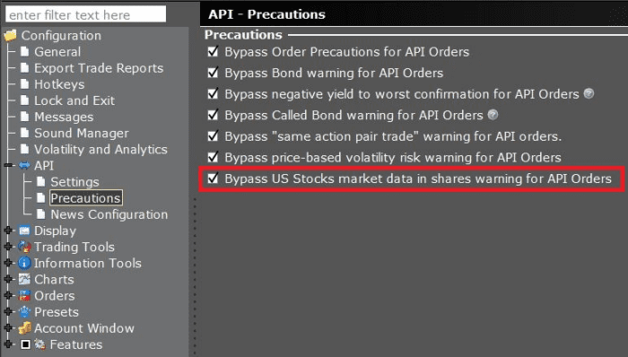

For all data, besides Delayed Watchlist Data, a paid data subscription is required to receive market data through the API. See the Market Data Subscriptions page for more information.
Live market data and historical bars are currently not available from the API for the exchange OSE. Only 15 minute delayed streaming data will be available for this exchange.
The bid, ask, and last size quotes are displayed in shares instead of lots.
API users have the option to configure the TWS API to work in compatibility mode for older programs, but we recommend migrating to “quotes in shares” at your earliest convenience.
To display quotes as lots, from the Global Configuration > API > Settings page, check “Bypass US Stocks market data in shares warning for API orders.”
